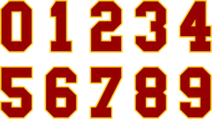

Low Minors · RP
Eric Cyr
- Team
 Southern California Trojans
Southern California Trojans- Organization
- Los Angeles Dodgers
- Position
- RP
- Bats/Throws
- R/L
- Height/Weight
- 6'4", 201 lb
- Born
- Feb 11, 1979 in Montreal, CAN
- Age
- 23
- Uniform
- #53
2002 pitching
| Team | Lg | G | GS | W | L | SV | IP | H | R | ER | BB | K | HR | ERA | WHIP | HLD | BS | QS | CG | SHO |
|---|---|---|---|---|---|---|---|---|---|---|---|---|---|---|---|---|---|---|---|---|
| SCTr | Low Minors | 10 | 2 | 1 | 4 | 0 | 23.0 | 34 | 19 | 18 | 8 | 25 | 2 | 7.04 | 1.83 | 0 | 0 | 0 | 0 | 0 |
2002 pitching, advanced
| Team | Lg | BF | Pit | Pit/IP | Opp AVG | BABIP | HBP | WP | IR | IR scored | K/9 | BB/9 | HR/9 | K% | BB% | K-BB% | FIP | ERA+ | GB% | WPA | WAR |
|---|---|---|---|---|---|---|---|---|---|---|---|---|---|---|---|---|---|---|---|---|---|
| SCTr | Low Minors | 113 | 366 | 15.9 | .340 | .438 | 2 | 0 | 7 | 2 (28.6%) | 9.8 | 3.1 | 0.8 | 22.1% | 7.1% | 15.0% | 3.74 | 61 | 43.2% | -0.72 | 0.4 |
Batted ball allowed 2002 Low Minors, 78 batted balls
No percentiles: not qualified in Low Minors yet (1 IP per team game). Balls in play only. Exit velocity converted from OOTP’s km/h. EV90 = 90th-percentile exit velocity; hard-hit = 95+ mph; barrel = Statcast’s zone (98+ mph at 26–30°, widening to 8–50° at 116 mph); sweet spot = 8–32°.
2002 batting
| Team | Lg | G | PA | AB | R | H | 2B | 3B | HR | RBI | BB | K | SB | AVG | OBP | SLG | OPS |
|---|---|---|---|---|---|---|---|---|---|---|---|---|---|---|---|---|---|
| SCTr | Low Minors | 10 | 6 | 6 | 0 | 2 | 0 | 0 | 0 | 1 | 0 | 3 | 0 | .333 | .333 | .333 | .667 |
2002 batting, advanced
| Team | Lg | PA | Pit/PA | SH | SF | HBP | IBB | GIDP | CS | OPS+ | ISO | BABIP | BB% | K% | WPA | UBR | WAR |
|---|---|---|---|---|---|---|---|---|---|---|---|---|---|---|---|---|---|
| SCTr | Low Minors | 6 | 3.83 | 0 | 0 | 0 | 0 | 0 | 0 | 70 | .000 | .667 | 0.0% | 50.0% | -0.01 | 0.0 | 0.0 |
Pitching splits
| Split | G | GS | W | L | SV | IP | H | R | ER | BB | K | HR | ERA | WHIP | Opp AVG | K/9 | BB/9 | HR/9 | FIP |
|---|---|---|---|---|---|---|---|---|---|---|---|---|---|---|---|---|---|---|---|
| Home | 3 | 0 | 1 | 2 | 0 | 6.0 | 6 | 4 | 4 | 3 | 6 | 0 | 6.00 | 1.50 | .273 | 9.0 | 4.5 | 0.0 | 3.48 |
| Road | 7 | 2 | 0 | 2 | 0 | 17.0 | 28 | 15 | 14 | 5 | 19 | 2 | 7.41 | 1.94 | .359 | 10.1 | 2.6 | 1.1 | 3.83 |
By month
| Month | G | GS | W | L | SV | IP | H | R | ER | BB | K | HR | ERA | WHIP | Opp AVG | K/9 | BB/9 | HR/9 | FIP |
|---|---|---|---|---|---|---|---|---|---|---|---|---|---|---|---|---|---|---|---|
| April | 7 | 0 | 1 | 1 | 0 | 12.1 | 13 | 5 | 5 | 4 | 15 | 1 | 3.65 | 1.38 | .277 | 10.9 | 2.9 | 0.7 | 3.56 |
| May | 3 | 2 | 0 | 3 | 0 | 10.2 | 21 | 14 | 13 | 4 | 10 | 1 | 10.97 | 2.34 | .396 | 8.4 | 3.4 | 0.8 | 3.94 |
vs left- and right-handed batters
| Split | BF | AB | H | HR | BB | K | Opp AVG | Opp OBP | Opp SLG | K% | BB% |
|---|---|---|---|---|---|---|---|---|---|---|---|
| vs LHB | 23 | 21 | 10 | 2 | 2 | 4 | .476 | .522 | .810 | 17.4% | 8.7% |
| vs RHB | 90 | 79 | 24 | 0 | 6 | 21 | .304 | .368 | .392 | 23.3% | 6.7% |
Opponents by situation
| Situation | PA | AB | H | 2B | 3B | HR | RBI | BB | K | AVG | OBP | SLG | OPS |
|---|---|---|---|---|---|---|---|---|---|---|---|---|---|
| Bases empty | 47 | 42 | 14 | 2 | 0 | 0 | 0 | 3 | 12 | .333 | .404 | .381 | .785 |
| Runners on | 66 | 58 | 20 | 4 | 1 | 2 | 18 | 5 | 13 | .345 | .397 | .552 | .949 |
| Runners in scoring position | 42 | 35 | 13 | 3 | 0 | 2 | 17 | 4 | 6 | .371 | .436 | .629 | 1.064 |
| RISP, two outs | 18 | 16 | 4 | 2 | 0 | 0 | 6 | 2 | 3 | .250 | .333 | .375 | .708 |
| Innings 1-3 | 27 | 25 | 6 | 2 | 1 | 0 | 3 | 1 | 7 | .240 | .269 | .400 | .669 |
| Innings 4-6 | 75 | 65 | 25 | 4 | 0 | 1 | 11 | 6 | 16 | .385 | .452 | .492 | .944 |
| Innings 7-9 | 11 | 10 | 3 | 0 | 0 | 1 | 4 | 1 | 2 | .300 | .364 | .600 | .964 |
| Close & late | 6 | 5 | 1 | 0 | 0 | 0 | 0 | 1 | 2 | .200 | .333 | .200 | .533 |
| Pinch-hitting PA | 2 | 2 | 0 | 0 | 0 | 0 | 0 | 0 | 1 | .000 | .000 | .000 | .000 |
Opponents by count count on the final pitch
| Count | PA | AB | H | 2B | 3B | HR | RBI | BB | K | AVG | OBP | SLG | OPS |
|---|---|---|---|---|---|---|---|---|---|---|---|---|---|
| First pitch (0-0) | 26 | 23 | 14 | 1 | 1 | 2 | 13 | 1 | 0 | .609 | .640 | 1.000 | 1.640 |
| Batter ahead | 39 | 30 | 11 | 3 | 0 | 0 | 4 | 7 | 7 | .367 | .486 | .467 | .953 |
| Even count | 13 | 13 | 3 | 1 | 0 | 0 | 0 | 0 | 6 | .231 | .231 | .308 | .538 |
| Batter behind | 35 | 34 | 6 | 1 | 0 | 0 | 1 | 0 | 12 | .176 | .200 | .206 | .406 |
| Two strikes | 39 | 35 | 4 | 1 | 0 | 0 | 3 | 3 | 25 | .114 | .205 | .143 | .348 |
| Full count (3-2) | 11 | 8 | 1 | 1 | 0 | 0 | 3 | 3 | 7 | .125 | .364 | .250 | .614 |
Every count
| Count | PA | AB | H | 2B | 3B | HR | RBI | BB | K | AVG | OBP | SLG | OPS |
|---|---|---|---|---|---|---|---|---|---|---|---|---|---|
| 0-0 | 26 | 23 | 14 | 1 | 1 | 2 | 13 | 1 | 0 | .609 | .640 | 1.000 | 1.640 |
| 0-1 | 14 | 14 | 3 | 1 | 0 | 0 | 1 | 0 | 0 | .214 | .214 | .286 | .500 |
| 0-2 | 6 | 6 | 1 | 0 | 0 | 0 | 0 | 0 | 3 | .167 | .167 | .167 | .333 |
| 1-0 | 8 | 6 | 2 | 0 | 0 | 0 | 0 | 0 | 0 | .333 | .333 | .333 | .667 |
| 1-1 | 6 | 6 | 3 | 1 | 0 | 0 | 0 | 0 | 0 | .500 | .500 | .667 | 1.167 |
| 1-2 | 15 | 14 | 2 | 0 | 0 | 0 | 0 | 0 | 9 | .143 | .200 | .143 | .343 |
| 2-0 | 1 | 1 | 0 | 0 | 0 | 0 | 0 | 0 | 0 | .000 | .000 | .000 | .000 |
| 2-1 | 13 | 13 | 6 | 2 | 0 | 0 | 1 | 0 | 0 | .462 | .462 | .615 | 1.077 |
| 2-2 | 7 | 7 | 0 | 0 | 0 | 0 | 0 | 0 | 6 | .000 | .000 | .000 | .000 |
| 3-0 | 1 | 0 | 0 | 0 | 0 | 0 | 0 | 1 | 0 | - | 1.000 | - | - |
| 3-1 | 5 | 2 | 2 | 0 | 0 | 0 | 0 | 3 | 0 | 1.000 | 1.000 | 1.000 | 2.000 |
| 3-2 | 11 | 8 | 1 | 1 | 0 | 0 | 3 | 3 | 7 | .125 | .364 | .250 | .614 |
Situational splits are rebuilt from every plate appearance in the export (base/out state when the PA began). "RBI" counts runs batted in on that PA. Close & late = 7th inning or later with the score within 3 runs (OOTP’s Close flag marks every PA with the margin at 3 or fewer). Pinch-hitting PA = plate appearances as a pinch hitter (for pitchers: against pinch hitters). Counts are the count when the PA’s final pitch was thrown, as OOTP records it: "Two strikes" means the PA ended on a two-strike pitch, "0-0" is the first-pitch result; batter ahead = more balls than strikes.
2002 ERA by game
2002 hot and cold WPA, game by game
2002 exit velocity vs launch angle allowed
2002 pitching game log
| Date | Opp | Score | Dec | IP | H | R | ER | BB | K | HR | BF | PC | GB | FB | QS | WPA | |
|---|---|---|---|---|---|---|---|---|---|---|---|---|---|---|---|---|---|
| May 11 | @TULSA | L 3-4 | GS | L | 5.1 | 12 | 4 | 4 | 0 | 5 | 0 | 27 | 81 | 1 | 9 | -0.246 | |
| May 6 | @CAFE | L 2-9 | GS | L | 3.0 | 5 | 7 | 6 | 2 | 3 | 1 | 18 | 54 | 5 | 3 | -0.356 | |
| May 2 | vsQUAK | L 2-4 | L | 2.1 | 4 | 3 | 3 | 2 | 2 | 0 | 13 | 39 | 2 | 3 | -0.107 | ||
| Apr 30 | @FRES | L 4-5 | 2.0 | 0 | 0 | 0 | 2 | 4 | 0 | 8 | 41 | 0 | 1 | 0.017 | |||
| Apr 25 | vsSiFal | L 1-4 | L | 2.0 | 1 | 1 | 1 | 1 | 1 | 0 | 8 | 31 | 4 | 0 | -0.066 | ||
| Apr 13 | vsBlOX | W 4-3 | W | 1.2 | 1 | 0 | 0 | 0 | 3 | 0 | 6 | 21 | 2 | 0 | 0.151 | ||
| Apr 8 | @QuCo | L 1-8 | 2.1 | 1 | 0 | 0 | 1 | 1 | 0 | 9 | 27 | 3 | 3 | 0.018 | |||
| Apr 5 | @Tusc | L 2-7 | 2.2 | 6 | 2 | 2 | 0 | 3 | 0 | 15 | 46 | 2 | 4 | -0.019 | |||
| Apr 4 | @Tusc | L 4-7 | 1.0 | 1 | 0 | 0 | 0 | 1 | 0 | 4 | 13 | 0 | 2 | 0.080 | |||
| Apr 1 | @SpCo | L 8-9 | 0.2 | 3 | 2 | 2 | 0 | 2 | 1 | 5 | 13 | 0 | 0 | -0.194 |
2002 batting game log
| Date | Opp | Score | Pos | Bat | PA | AB | R | H | 2B | 3B | HR | RBI | BB | K | SB | CS | HBP | GIDP | WPA |
|---|---|---|---|---|---|---|---|---|---|---|---|---|---|---|---|---|---|---|---|
| May 11 | @TULSA | L 3-4 | P | 9 | 3 | 3 | 0 | 1 | 0 | 0 | 0 | 1 | 0 | 2 | 0 | 0 | 0 | 0 | 0.009 |
| May 6 | @CAFE | L 2-9 | P | 9 | 1 | 1 | 0 | 0 | 0 | 0 | 0 | 0 | 0 | 1 | 0 | 0 | 0 | 0 | -0.032 |
| May 2 | vsQUAK | L 2-4 | PH | 9 | 1 | 1 | 0 | 0 | 0 | 0 | 0 | 0 | 0 | 0 | 0 | 0 | 0 | 0 | -0.026 |
| Apr 30 | @FRES | L 4-5 | PH | 0 | 0 | 0 | 0 | 0 | 0 | 0 | 0 | 0 | 0 | 0 | 0 | 0 | 0 | 0.000 | |
| Apr 25 | vsSiFal | L 1-4 | PH | 0 | 0 | 0 | 0 | 0 | 0 | 0 | 0 | 0 | 0 | 0 | 0 | 0 | 0 | 0.000 | |
| Apr 13 | vsBlOX | W 4-3 | PH | 0 | 0 | 0 | 0 | 0 | 0 | 0 | 0 | 0 | 0 | 0 | 0 | 0 | 0 | 0.000 | |
| Apr 8 | @QuCo | L 1-8 | PH | 0 | 0 | 0 | 0 | 0 | 0 | 0 | 0 | 0 | 0 | 0 | 0 | 0 | 0 | 0.000 | |
| Apr 5 | @Tusc | L 2-7 | PH | 9 | 1 | 1 | 0 | 1 | 0 | 0 | 0 | 0 | 0 | 0 | 0 | 0 | 0 | 0 | 0.035 |
| Apr 4 | @Tusc | L 4-7 | PH | 0 | 0 | 0 | 0 | 0 | 0 | 0 | 0 | 0 | 0 | 0 | 0 | 0 | 0 | 0.000 | |
| Apr 1 | @SpCo | L 8-9 | PH | 0 | 0 | 0 | 0 | 0 | 0 | 0 | 0 | 0 | 0 | 0 | 0 | 0 | 0 | 0.000 |
2002 fielding by position
| Team | Lg | Pos | G | GS | Inn | TC | PO | A | E | DP | FPct | ZR | Arm | Framing | SB | CS | CS% | PB |
|---|---|---|---|---|---|---|---|---|---|---|---|---|---|---|---|---|---|---|
| SCTr | Low Minors | P | 10 | 2 | 23.0 | 2 | 0 | 1 | 1 | 0 | .500 | 0.1 | - | - | - | - | - | - |
ZR (zone rating), Arm and Framing are OOTP's runs-above-average figures. SB/CS/CS% are base stealers against him as a catcher.
Career pitching
| Year | Team | Lvl | G | GS | W | L | SV | IP | H | R | ER | BB | K | HR | ERA | WHIP | WAR |
|---|---|---|---|---|---|---|---|---|---|---|---|---|---|---|---|---|---|
| 1999 | - | Rookie | 11 | 5 | 2 | 1 | 0 | 38.0 | 34 | 19 | 14 | 15 | 39 | 2 | 3.32 | 1.29 | 0.9 |
| 1999 | - | Rookie | 1 | 1 | 1 | 0 | 0 | 5.0 | 5 | 1 | 1 | 1 | 3 | 0 | 1.80 | 1.20 | 0.2 |
| 2000 | FARG | A | 9 | 6 | 2 | 2 | 0 | 32.0 | 28 | 18 | 17 | 15 | 31 | 2 | 4.78 | 1.34 | 0.5 |
| 2000 | - | Rookie | 2 | 1 | 0 | 0 | 0 | 3.0 | 4 | 1 | 1 | 2 | 4 | 0 | 3.00 | 2.00 | 0.1 |
| 2001 | LaEl | A | 21 | 16 | 7 | 4 | 0 | 100.0 | 68 | 28 | 18 | 24 | 131 | 1 | 1.62 | 0.92 | 4.9 |
| 2002 | SCTr | Low Minors | 10 | 2 | 1 | 4 | 0 | 23.0 | 34 | 19 | 18 | 8 | 25 | 2 | 7.04 | 1.83 | 0.4 |
Career batting (as a pitcher)
| Year | Team | Lvl | G | PA | AB | R | H | 2B | 3B | HR | RBI | BB | K | SB | AVG | OBP | SLG | OPS | WAR |
|---|---|---|---|---|---|---|---|---|---|---|---|---|---|---|---|---|---|---|---|
| 2002 | SCTr | Low Minors | 10 | 6 | 6 | 0 | 2 | 0 | 0 | 0 | 1 | 0 | 3 | 0 | .333 | .333 | .333 | .667 | 0.0 |
Seasons before 2002 are the player's real-life record, listed under the franchise that holds that history in this universe. "Top level" totals count major-league-level seasons only.
Service time & contract status
- Service time
- 0.000 (0 days; 0 this season)
- Status
- Pre-Arb
- Arbitration
- Not projected
- Free agency
- Not projected
- Options
- 0 used, 3 remaining (of 3)
No projection: no major-league service yet and not on an MLB, ABL or FBL roster.
Service time is Y.DDD: major-league service years plus days toward the next year (172 days = 1 year, from the league rules). Status follows the league rules: under 3 years Pre-Arb, 3 to 5 years Arb 1/2/3, 6+ years FA-eligible. The export's arbitration_offering is 0 and no player has gone through arbitration yet (has_received_arbitration is 0 for everyone), so these statuses come from the rules, not from hearings. Projected years assume a full major-league season of service every year from 2002 on.
Most frequent matchups hitters he has faced
| Batter | AB | H | HR | AVG |
|---|---|---|---|---|
| Henry Calderon | 3 | 3 | 0 | 1.000 |
| Enrique Ramirez | 3 | 2 | 0 | .667 |
| Derin McMains | 3 | 2 | 0 | .667 |
| Felix Pie | 3 | 1 | 0 | .333 |
| Brian Esposito | 3 | 1 | 0 | .333 |
| Victor Mercedes | 3 | 1 | 0 | .333 |
| Shelley Duncan | 3 | 1 | 0 | .333 |
| Ron Acuna | 3 | 0 | 0 | .000 |
| Nick Orlandos | 3 | 0 | 0 | .000 |
| Jason Williams | 3 | 0 | 0 | .000 |
| Selwyn Langaigne | 2 | 2 | 0 | 1.000 |
| John Santor | 2 | 2 | 0 | 1.000 |
| Matthew Brown | 2 | 1 | 0 | .500 |
| Jason Aspito | 2 | 1 | 0 | .500 |
| Chris Collins | 2 | 1 | 0 | .500 |